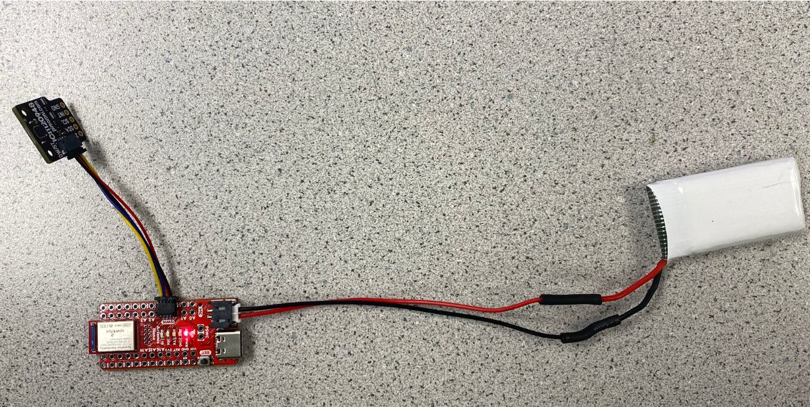

Welcome to my Fast Robots website page. I am an ECE student interested in robotics.
LAB1 The Artemis board and Bluetooth
Part1: Objective
The goal of this part of the lab is to setup and become familiar with the Arduino IDE and the Artemis board. It covers skills in programming on Arduino IDE, testing board with LED blinks, communication over serial protocol, and the application of the onboard temperature sensor and Pulse Density Microphone.
22nd, Jan 2024 - 7th Feb 2024
Example: Blink it Up
After successfully installing the SparkFun Apollo3 support software in the Arduino IDE and connecting the SparkFun RedBoard Artemis Nano to the laptop, I first tested programming the board by making an LED blink. In the example video below, the LED was on for 1 seconds, and then off for 1 second.
Example: Serial Communication
The screenshot below demonstrates how to test serial communication. In this example, the user types an input into the serial monitor, and the Artemis board reads this input and outputs it back to the serial monitor.
Example: Analog Input Read
The example video below demonstrates how to use the temperature sensor. The temperature recorded by the sensor on the Artemis board is sent to the serial monitor in Fahrenheit. To illustrate how the sensor responds, I covered the Artemis board with my hand, causing the temperature to increase to above 80°F.
Example: Microphone Usage
The example video below demonstrates how to use the microphone on the Artemis board to detect the loudest frequency.
(5000-Level) Example: Musical Tuner
The example video below was used to identify the musical note "A". When the microphone detected an "A", corresponding to a sound frequency of approximately 526 Hz, the LED would turn on. For sounds of other frequencies, the LED remains off.
Part2: Objective
The goal of part two is to establish Bluetooth communication between the computer and the Artemis board, utilizing Python in a Jupyter notebook and the Arduino programming language. This session aims to create a foundational framework for Bluetooth data transmission, setting the stage for its application in future lab exercises.
22nd, Jan 2024 - 7th Feb 2024
Setup
Start Jupyter Server
After activating the virtual Python environment, I started the Jupyter server to use Jupyter notebooks for writing Python code.
Artemis Board Setup
After installing ArduinoBLE from the library manager in the Arduino IDE, I loaded and burned the sketch ble_arduino.ino onto the Artemis board from the ble_arduino directory in the codebase, following the instructions provided.
Bluetooth Connection
After successfully setting up the Artemis board and starting the Jupyter server, the next step was to connect the Artemis board to the Python code. I first needed to read the MAC address of the Artemis board and replace the default MAC address in the Arduino code. After uploading the provided ble_arduino.ino code file to the Artemis board, the MAC address c0:89:f4:6b:86:4b was returned in the serial monitor, as shown in the figure below.
Since the BLEService is used in this lab, in addition to the MAC address, a UUID is also needed to identify the service. This is to differentiate the various types of data sent or received between the Artemis and the computer. Therefore, in the Jupyter Notebook, I ran the following code:
from uuid import uuid4 uuid4()
This generated a unique UUID, which I then assigned to the BLE service in both the Arduino IDE and the Jupyter notebooks.
Connection
For the connection between the Artemis board and the computer, I first obtained the ArtemisBLEController object and connected to the Artemis Device before conducting any further tests.
Connection via commands
For testing the connection between the Artemis board and the computer, some new commands were created and utilized for different tasks. When a new command type is introduced, it should be added to both the Arduino IDE and the Python code to ensure they can communicate correctly under a specific command.
Example: ECHO Command
This ECHO command involved sending a string value to the Artemis board from the computer, which corresponds to the Python code. Then, the Artemis board sent back the augmented phrase, which had additional words added to the original phrase, as shown below in both the Jupyter notebooks and the Arduino IDE screenshot, to the computer.
Example: GET_TIME_MILLIS Command
The next command, GET_TIME_MILLIS, involved receiving the current time from the Artemis board by using the built-in millis() function in the Arduino IDE language. Following the instructions, I converted this value to an integer and sent it as a string to Python.
Notification Handler
Instead of manually sending a command and then receiving the data, a notification handler could be used to monitor the data transfer. It is an asynchronous event handler, which means it would handle the case when the Artemis board is sending data and then receiving the data in Python.
The code below demonstrates how I used a notification handler to asynchronously receive the time data sent from the Artemis board.
Example: GET_TIME_MILLIS_3s Command
The screenshot below demonstrates that I obtained the current time in milliseconds from the Artemis board and then sent it back to the laptop. After collecting these time values for 3 seconds, I was able to calculate an average speed of how fast messages can be sent. The effective data transfer rate of this method was 832 bytes/s.
Example: SEND_TIME_DATA
Next, a new command, SEND_TIME_DATA, was introduced. In the Arduino IDE, I created a loop that, instead of sending each timestamp to the laptop, stored each timestamp in an integer array named time_stamps. By calling the command SEND_TIME_DATA, the Arduino code looped through the array and sent each data point as a string to the laptop for processing. Additionally, the data transfer rate was calculated, which was 411,000 bytes/s. This rate was in contrast to the previous method, which sent each timestamp immediately instead of storing them in an array.
Example: GET_TEMP_READINGS
Next, as instructed, I added a second array of the same size as the time stamp array to store temperature readings. As shown in the screenshot below, each element in both arrays corresponded, meaning that the first timestamp was recorded at the same time as the first temperature reading. A command, GET_TEMP_READINGS, was introduced to loop through both arrays concurrently and send the data back to the laptop. I was able to configure the notification handler to manage the event and wrote code in Python to parse these strings, populating the data into two lists.
Example: Discussion about Two methods
The first method involves the Artemis board sending data immediately as it becomes available, without any buffering. The second approach, on the other hand, has the Artemis board buffering data into a packet before sending it to the computer. This method is faster, as indicated by the results above. The Artemis board is equipped with 384 kB of RAM, and considering that one character (char) is equivalent to 1 byte, it has the capacity to store up to 384,000 characters in its memory for transmission without running out of space.
(5000-Level) : Effeefctive Data Rate And Overhead
Next, I sent messages from the computer and received replies from the Artemis board. I calculated the data rate for 5-byte replies to be about 103 bytes/s and for 120-byte replies to be 1602 bytes/s. Additionally, to understand the relationship between the number of bytes and the data transfer rate, I tested multiple byte replies at intervals of 5. It was observed that the data rate increases with the amount of bytes sent, as depicted in the graph below. This trend indicates that larger replies reduce overhead. However, as shown on the graph, when the byte replies become too large—specifically, when they exceed 80 bytes—the trend might break, and the rate might drop to a lower rate than expected.
(5000-Level) : Reliability
By modifying the code for the command SEND_TIME_DATA to send 10 unique data points at a high speed without any delay, the reliability of the Artemis was demonstrated. In the screenshot attached below, we can see that the data is reliable by comparing the data sent from the Artemis board and the data received on the laptop.
IMU
Set Up the IMU
The goal of this part of the lab is to set up and become familiar with the IMU. It covers skills in programming on the Arduino IDE, testing the IMU with collecting accelerometer and gyroscope data.
Given that the IMU communicates with the Artemis board using the I2C protocol, knowing the slave address is crucial. The variable AD0_VAL signifies the last bit of the IMU's I2C address, which changes depending on the ADR jumper's connection. Initially, my IMU failed to provide any data, and the connection was unsuccessful because I had AD0_VAL set to 1, whereas it should have been 0 for my device.
7th, Feb 2024 - 14th Feb 2024
Visualizing IMU Accelerometer and Gyroscope Data via Serial Plotter
The IMU was first connected to the Artemis board via the QWIIC connectors. To set up the IMU in the software, the ICM_20948 library was installed in the Arduino IDE to enable communication between the Artemis board and the IMU, allowing for data collection. The accelerometer and gyroscope data were visualized using the serial plotter.
Visualizing the difference between accelerometer and gyroscope data via Serial Monitor
Based on the data printed out on the serial monitor, the accelerometer data indicates the acceleration of motion around each coordinate axis. Thus, when moving the device along each axis, it is noticeable that the corresponding accelerometer data for that axis changes rapidly. The gyroscope measures the rate of angular rotation around the spatial coordinate axes. When the device is stationary, the data remains relatively small; however, it experiences a slight drift towards larger values.
Accelerometer
In order to use the accelerometer to determine tilt and roll, we can use the atan2 function, which returns a number in radians within the range [−π,π].
The functions used here to calculate angles are:
The screenshot provided below demonstrates the implementation of the atan2 function to calculate the angles of pitch and roll in radians, which are then converted to degrees.
The video below illustrates the pitch and roll data being printed out. It clearly demonstrates that the system operates effectively within the range of -90 degrees to 90 degrees along both the x and y axes, showcasing the pitch and roll actions.
Accelerometer Accuracy
As I record the data for a few seconds at each angle (0, -90, 90) and review the recorded data, it appears to be accurate enough. The teaching assistant instructed that there is no need to calculate the conversion factor.
Accelerometer Noise
As demonstrated in the video below, when the device is stationary, the signal in the time domain continues to fluctuate, indicating noise that may require attention.
When inspecting the noise, a fast Fourier transform (FFT)—an algorithm that computes the discrete Fourier transform (DFT) of a sequence—plays a crucial role. It is instrumental in visualizing the data more effectively in the frequency domain
When the device is completely stationary, collecting the data and applying the Fast Fourier Transform (FFT) reveals the signal in the frequency domain, as shown below.
However, when a vibration occurs during the collection of accelerometer data, the signal in the frequency domain appears as illustrated in the screenshot below.
According to the datasheet, a hardware low pass filter is implemented, which explains the relatively clean signal in the FFT diagram when the device is stationary. New signals appearing up to about 30Hz were observed when vibration was introduced. Implementing a low pass filter via software might be beneficial. Based on the diagram, I selected a cut-off frequency of 10Hz.
The cut-off frequency was set at 10 Hz. Using the formula \(\boldsymbol{f = \frac{1}{2\pi RC}}\), where the f is the cut-off frequency, we can solve for the RC constant. Substituting \(\boldsymbol{f = 10}\)
into the equation yields an RC constant of approximately 0.0159155. Consequently, using the formula \(\boldsymbol{\alpha = \frac{T}{T + RC}}\), where T is the period corresponding to the sample rate (\(\boldsymbol{T = \frac{1}{\text{sample rate}}}\)), and the sample rate is determined by recording a certain number of data points over a specific period of time, which calculates to 294.76787030213706 Hz. This results in
\(\boldsymbol{T = 0.00339\, \text{seconds}}\), and therefore, \(\boldsymbol{\alpha}\) is calculated to be approximately 0.1756.
After introducing the low pass filter, which effectively reduces the noise to some extent, the data monitoring through the serial plotter is demonstrated in the video below. The video clearly distinguishes between the raw data, represented by the blue line, and the processed data, shown as the orange line, after implementing the low pass filter. It is evident that the low pass filter significantly reduces the noise.
Gyroscope
The gyroscope measures the rate of angular change in degrees per second. To calculate the angle, it adds the product of the angular rate and time to the current angle. A key advantage of the gyroscope is its lower noise levels compared to those of the accelerometer. However, a notable drawback is data drift over time. This means that even when the device is stationary on a table and the readings should ideally be zero, the data will gradually accumulate, leading to progressively larger values as time advances.
Data Drift
The video below displays data measured from the gyroscope, clearly showing how the data drifts over time even when the device is stationary.
Comparison of data output: gyroscope data versus accelerometer data and accelerometer data processed with a Low Pass Filter (LPF)
The video below demonstrates that the gyroscope data follows the same pattern as the accelerometer data, albeit with an increasing offset over time. This growing offset highlights the drift characteristic of gyroscope data.
Since calculating angles from gyroscope data is heavily dependent on the time difference between each data collection, the sample rate significantly impacts accuracy. After reducing the sample rate by introducing a delay, visualization of the gyro data through the serial plotter showed that updates to the new angles became slower and noticeably less accurate.
Complimentary Filter
Despite the application recommended by the instructor, which is capable of auto-scaling the data, not functioning on my laptop, it is still evident that after implementing the complementary filter in my system, the vibrations caused no more than a 3-degree difference.
Additionally, the working range from -90 degrees to 90 degrees was verified.
Sample Data
I increased the speed of IMU data collection by eliminating print statements and opting to store a time value at each iteration of the while loop, and store another time value when myICM.dataReady() returns true. This resulted in an average delay of approximately 0.0005 seconds between collections. However, this delay is expected to increase with the addition of more specific function calls and filter processing. Furthermore, by comparing two arrays that store time values for the main while loop and an inner loop—which merely checks for new IMU data readiness—the pacing between them appeared consistent.
Discussion
Consider if it makes sense to have one big array, or separate arrays for storing ToF, Accelerometer, and Gyroscope data
Storing data in separate arrays is more logical because each sensor—Time-of-Flight (ToF), Accelerometer, and Gyroscope—generates data with distinct meanings and units. Separate arrays ensure clearer organization, simplifying data processing and analysis. This is particularly important for cases like the Accelerometer, which requires the implementation of a Low Pass Filter, whereas Gyroscope data does not. Thus, processing data from different sensors may necessitate different filters or logic, indicating that using separate arrays can streamline implementation.
Consider the best data type to store your data. Should you use string, floats, double, integers?
For the Time-of-Flight (ToF) sensor, integers should be sufficient since distances are typically measured in whole numbers of millimeters or centimeters. However, floats are necessary if the application requires more precise distance measurements. For both the gyroscope and accelerometer, which measure different parameters, floats are adequate because they offer a good balance between precision and memory usage.
Consider the memory of the Artemis; how much memory can you allocate to your arrays? What does that correspond to in seconds?
Assuming I have three separate arrays for the three sensors—ToF, Gyroscope, and Accelerometer—with each sensor's reading represented as a single float, I would need 12 bytes per set of sensor readings (4 bytes × 3). Assuming the entire 384 KB of RAM is available for data storage and with a sampling rate of 100 readings per second, I can store approximately 32,000 sets of data points. This corresponds to about 320 seconds, which is equivalent to approximately 5 minutes and 20 seconds of data at a sampling rate of 100 Hz.
Demonstration of data collection for over 5 seconds
The image below demonstrates that the board is capable of capturing data for more than 5 seconds and then transmitting it to the computer via Bluetooth.
Stunt Car Record
The video below showcases the stunt car in action. I've tested its movements forward, backward, turning around, and even flipping. The car is highly sensitive and fast, making it challenging to prevent collisions with walls or to avoid flipping due to its speed.
As the instructor clarified, there is currently no need to mount the IMU on the car for testing.
Time of Flight Sensors
Power up your Artemis with a battery
In constructing the project, it is essential to acquire a JST connector and a battery as primary components. The process involves carefully cutting the battery wires individually to avoid simultaneously shorting the terminals, which could result in battery damage. Subsequent steps include soldering the battery wires to the JST jumper wires, and to ensure long-term durability and safety, insulating the exposed wire sections with heat shrink over electrical tape. Additionally, verifying the wire polarity is crucial, with the positive terminal of the battery connecting to the positive terminal on the Artemis device. The final stage involves powering the Artemis without the use of the USB C port, facilitating the testing of Bluetooth Low Energy (BLE) communications between the laptop and the Artemis, thereby confirming the device's proper operational status and its ability to transmit messages wirelessly. The system powered by the battery functions as expected, which is illustrated in the picture below.

The video below demonstrates the successful powering of the Artemis board and the use of the 'ECHO' command to send a message to the Artemis board. I received a response from the Artemis board, confirming its operational status without the need for power from a USB C port. This indicates that I successfully got the Artemis board to work wirelessly.
14th, Feb 2024 - 21th Feb 2024
Set up the ToF sensor
Starting by cutting one end of a QWIIC cable and removing the protective film, I then soldered the other end to the ToF sensor. After successfully installing the SparkFun VL53L1X 4m laser distance sensor library, I tested the ToF sensor by connecting it to the Artemis Board to read data from it. One challenge I encountered during this process was that it was my first time using a QWIIC connection. I needed to identify that the blue cord connected to SDA and the yellow cord connected to SCL before I started soldering the wires.
I2C Address Scanning
There is an example sketch within the installed library that I used to scan for the I2C address of the device. The device was successfully identified, and its slave address is 0x29, as illustrated in the screenshot below.
The I2C address matched my expectations. According to the datasheet, "The sensor's 7-bit slave address defaults to 0101001b on power-up." The I2C scanner code returned 0x29, which is accurate because 0101001b is equal to 0x29 in hexadecimal.
Connect two ToF
In this lab, two ToF sensors are used, which presents the challenge of managing two ToF sensors that have the same I2C address. To address this, I first connected each ToF sensor separately to the Artemis board and identified the I2C address of each device by running the I2C scanner example code. It was discovered that both sensors shared the same slave address. According to the datasheet, the slave address can be changed, and the installed library includes a function to modify the device address until it is reset or powered off. By connecting the shutdown pin on one of the ToF sensors to one of GPIO pin on the Artemis board and disabling it during startup by pulling the corresponding pin low, I was able to change the address of the other sensor to 0x30. After adjusting the address, I reactivated the ToF sensor with the original address of 0x29. Consequently, I successfully connected two ToF sensors to the Artemis board simultaneously, allowing both to function at the same time, as demonstrated in the video below.
ToF modes
The library currently supports two distance measuring modes: setDistanceModeShort and setDistanceModeLong. I successfully configured each sensor with a different mode. By utilizing the getDistanceMode() function provided by the library, I confirmed the individual settings for each sensor, as demonstrated in the screenshot below.
Test with two modes
I tested two sensors using two distinct modes: short mode and long mode, and generated graphs as illustrated in the screenshot below. The data collection occurred under normal lab ambient lighting conditions. Due to space limitations, I did not test distances beyond 1 meter, which falls within the valid range for both modes.it appears to be accurate enough. The teaching assistant instructed that there is no need to calculate the conversion factor.
I also tested the two sensors in both short mode and long mode by covering the light, in contrast to the tests conducted under lab ambient lighting conditions (with all other conditions, such as distance measurement, being the same). I plotted the data as illustrated in the screenshot below.
I also conducted tests on the two sensors using targets with different textures. The data previously collected were obtained using the lab floor as the target. I conducted additional tests using a cotton chair as the target; however, the data did not show any significant differences from the results illustrated in the screenshots above.
As mentioned in the datasheet for the VL53L1X sensor, the sensor employs FlightSense technology. This ensures that the sensor's performance is largely unaffected by ambient lighting conditions and target characteristics such as color, shape, texture, and reflectivity. This observation aligns with my discoveries from the tests mentioned above. According to the datasheet from Pololu, these external factors may only influence the maximum range of the sensor measurements. However, for the purposes of design and development in this lab, the impact of these external conditions is not deemed significant.
How fast each sensor reads data
I recorded the time stamp for each measurement taken by the sensor and calculated the average sampling rate to be approximately 0.143 seconds. This means the sensor records data at a frequency of about 6.98Hz, or every 0.143 seconds.
I verified the readiness of the data from both sensors; if ready, the measurements were printed, otherwise, the time was printed by running the while loop in the main loop function. This process revealed that the main loop executes faster than the data collection by the sensors. Given that my current loop runs at approximately 7Hz, which is slower than expected, I reviewed my code in the Arduino IDE and consulted the Time-of-Flight (ToF) sensor's datasheet for insights. I discovered the slowdown was due to an excessive number of conditional checks in my loop, including checks on array length, data storage management, and executing 'stop ranging' in every loop.
After introducing the low pass filter, which effectively reduces the noise to some extent, the data monitoring through the serial plotter is demonstrated in the video below. The video clearly distinguishes between the raw data, represented by the blue line, and the processed data, shown as the orange line, after implementing the low pass filter. It is evident that the low pass filter significantly reduces the noise.
Gyroscope
The gyroscope measures the rate of angular change in degrees per second. To calculate the angle, it adds the product of the angular rate and time to the current angle. A key advantage of the gyroscope is its lower noise levels compared to those of the accelerometer. However, a notable drawback is data drift over time. This means that even when the device is stationary on a table and the readings should ideally be zero, the data will gradually accumulate, leading to progressively larger values as time advances.
Data Drift
The video below displays data measured from the gyroscope, clearly showing how the data drifts over time even when the device is stationary.
Comparison of data output: gyroscope data versus accelerometer data and accelerometer data processed with a Low Pass Filter (LPF)
The video below demonstrates that the gyroscope data follows the same pattern as the accelerometer data, albeit with an increasing offset over time. This growing offset highlights the drift characteristic of gyroscope data.
Since calculating angles from gyroscope data is heavily dependent on the time difference between each data collection, the sample rate significantly impacts accuracy. After reducing the sample rate by introducing a delay, visualization of the gyro data through the serial plotter showed that updates to the new angles became slower and noticeably less accurate.
Complimentary Filter
Despite the application recommended by the instructor, which is capable of auto-scaling the data, not functioning on my laptop, it is still evident that after implementing the complementary filter in my system, the vibrations caused no more than a 3-degree difference.
Additionally, the working range from -90 degrees to 90 degrees was verified.
Sample Data
I increased the speed of IMU data collection by eliminating print statements and opting to store a time value at each iteration of the while loop, and store another time value when myICM.dataReady() returns true. This resulted in an average delay of approximately 0.0005 seconds between collections. However, this delay is expected to increase with the addition of more specific function calls and filter processing. Furthermore, by comparing two arrays that store time values for the main while loop and an inner loop—which merely checks for new IMU data readiness—the pacing between them appeared consistent.
Discussion
Consider if it makes sense to have one big array, or separate arrays for storing ToF, Accelerometer, and Gyroscope data
Storing data in separate arrays is more logical because each sensor—Time-of-Flight (ToF), Accelerometer, and Gyroscope—generates data with distinct meanings and units. Separate arrays ensure clearer organization, simplifying data processing and analysis. This is particularly important for cases like the Accelerometer, which requires the implementation of a Low Pass Filter, whereas Gyroscope data does not. Thus, processing data from different sensors may necessitate different filters or logic, indicating that using separate arrays can streamline implementation.
Consider the best data type to store your data. Should you use string, floats, double, integers?
For the Time-of-Flight (ToF) sensor, integers should be sufficient since distances are typically measured in whole numbers of millimeters or centimeters. However, floats are necessary if the application requires more precise distance measurements. For both the gyroscope and accelerometer, which measure different parameters, floats are adequate because they offer a good balance between precision and memory usage.
Consider the memory of the Artemis; how much memory can you allocate to your arrays? What does that correspond to in seconds?
Assuming I have three separate arrays for the three sensors—ToF, Gyroscope, and Accelerometer—with each sensor's reading represented as a single float, I would need 12 bytes per set of sensor readings (4 bytes × 3). Assuming the entire 384 KB of RAM is available for data storage and with a sampling rate of 100 readings per second, I can store approximately 32,000 sets of data points. This corresponds to about 320 seconds, which is equivalent to approximately 5 minutes and 20 seconds of data at a sampling rate of 100 Hz.
Demonstration of data collection for over 5 seconds
The image below demonstrates that the board is capable of capturing data for more than 5 seconds and then transmitting it to the computer via Bluetooth.
Stunt Car Record
The video below showcases the stunt car in action. I've tested its movements forward, backward, turning around, and even flipping. The car is highly sensitive and fast, making it challenging to prevent collisions with walls or to avoid flipping due to its speed.
As the instructor clarified, there is currently no need to mount the IMU on the car for testing.